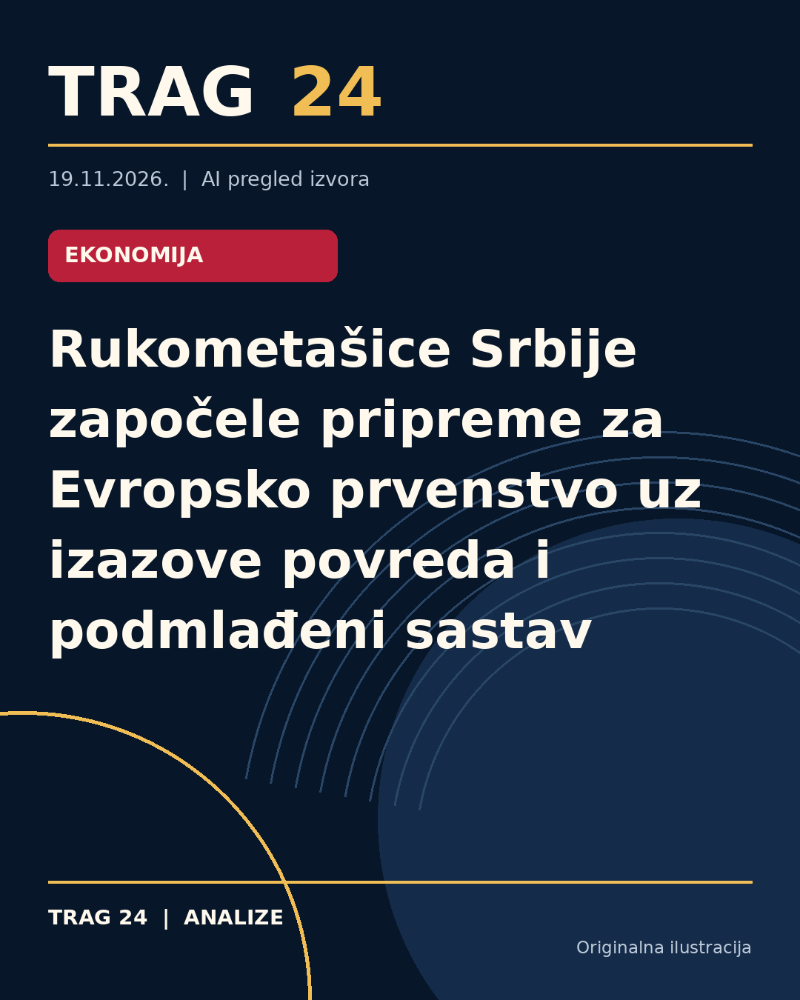

Rukometašice Srbije započele pripreme za Evropsko prvenstvo uz izazove povreda i podmlađeni sastav

ŠTA SE DOGODILO
Rukometašice Srbije okupile su se 18. novembra u Kovilovu kako bi započele završne pripreme za predstojeće Evropsko prvenstvo koje se održava od 3. do 20. decembra u nekoliko zemalja, uključujući Slovačku gde će Srbija igrati u Grupi F protiv Švedske, Nemačke i Slovačke. Tim je podmlađen i prolazi kroz fazu upoznavanja i priprema.
HRONOLOGIJA
Ekipa će do 25. novembra trenirati u Kovilovu, nakon čega kreću dve prijateljske utakmice protiv Švajcarske u Šafhauzenu. Selekcija je još u procesu kompletiranja sastava, sa povredama i izmenama u timu zbog kojih su neki igrači privremeno odsutni. Pripreme podrazumevaju i taktički rad i utvrđivanje postignutog znanja među igračicama.
ŠTA NAVODE IZVORI
Izvor Telegraf navodi da je tim po mnogo čemu promenjen i mlad, ali s potencijalom, dok Kurir donosi detaljnije izjave selektorke Sandre Kolaković koja je istakla značaj produžene IHF nedelje za trening i izrazila zabrinutost zbog povreda ključnih igračica poput kapitenke Jovane Skrobić. Istakla je i dolazak mladih snaga kao zamena povređenim igračicama, kao i neizvesnost oko kompletnosti tima u narednim danima. Oba izvora prenose da su utakmice sa Švajcarskom ključne za proveru trenutnog stanja ekipe.
ŠTA JE POTVRĐENO
Potvrđeno je da se pripremni kamp Srbije održava u Kovilovu, kao i da će susreti sa Švajcarskom biti održani u Šafhauzenu. Takođe, potvrđeno je da su u ekipi prisutne povrede i da su zbog bolesti i povreda promene u sastavu neminovne. Utvrđeno je da će se takmičenje igrati u više država, a Srbija će nastupiti u grupi sa tri selekcije u Bratislavi.
ŠTA NIJE POTVRĐENO
Nije potvrđeno koliko će povrede kapitenke i drugih igračica dugoročno uticati na nastup Srbije na prvenstvu. Takođe, nemamo potvrdu o preciznim očekivanjima tima ili o konačnom sastavu reprezentacije. Nije poznato ni kako će se mladi igrači uklopiti i da li će Srbija izaći kao iznenađenje prvenstva.
ŠTA OSTАJE OTVORENO: Ostaje otvoreno kako će se podmlađena i delimično povređena ekipa pokazati na samom prvenstvu i da li će njene sposobnosti i zajedništvo nadoknaditi izazove koje donose povrede i nedostatak iskustva. Takođe, ostaje da se vidi koji će taktički ishodi i rad u predstojećim utakmicama protiv Švajcarske doneti, kao i kako će se selektorkin proces izgradnje tima razvijati na duže staze.
Izvori
- https://www.telegraf.rs/sport/ostali-sportovi/4435555-srbija-pali-motore-za-evropsko-prvenstvo
- https://www.kurir.rs/sport/ostali-sportovi/10166055/rukometasice-pocele-pripreme-za-evropsko-prvenstvo
Ova analiza je pripremljena uz pomoć veštačke inteligencije na osnovu javno dostupnih izvora. Navodi izvora nisu nužno nezavisno potvrđeni.